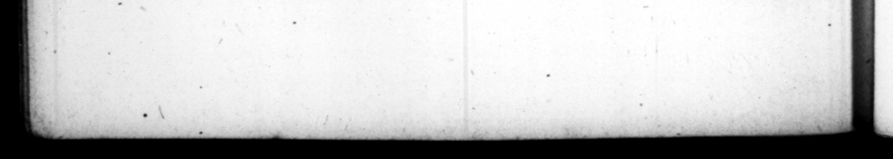

* — * 311 7 PP xr r r , > . 364 ; oY C. $UB s by TR AN Q. | | eadem me tamen manent capilderum fata, & forts, animo fe- 36 comam in centem. Scias nec gratius quidquam decore, nec bre vius. 19. Laboris im patiens, per urbem pedibus non temere ambulavit: in expeditione, agmine equo rarius, lectica afli22 ve Armorum Do 1agittarium v ipuo ſtudi tencbatur. —— varii generis feras ſæpę 1eceſſu conficientem ſpectavere plerique,atque.etiam ex induſtria ita quarvndam capita fi. gentem, ut duobus quaſi cornua effingeret. Nonnunquam in pueri procul ſtantis, e pro ſco · pulo diſpanſam dextræ ma. nus palmam, ſagittas tanta a diſtance, which he be arte direxit, ut omnes per intervalla digitorum innocue evaderent. | 20. Liberalia ſtudia in initio Imperii neglexit, quamuam bibliothecas incendio abumptas impenſiſſime raparare curaſſet, exemplaribus undi que petitis, miſſiſque Alexanlam, qui deſcriberent, emendarentque. Nunquam tamen aut hiſtoriæ carminibuſye cognoſcendis operam ullam, aut ſtilo vel neceſſario dedit. Prater commentarios & acta Tiberii Cæſaris nihil lectitabat, Epiſtolas orationeſque & edicta alieno formabat inge. nio, ſermonis tamen nec inelegantis. Dictorum inter dum etjam notabilium, el. lem, inquit, tam formoſus eſſe, quam Metius ſibi videtur. Et * caput varietate capili ſubrutilum & incanum, perfuſam nivem mulſo dixit. 21. tionem Principum miſerrimam aiebat . quibus de conjuratione comperta non crederetur, nit occiſss, Quoties — ales fe ob) Haber, adoleſcentia ſeneſ. generally in à chair. He in Albano , nation for the exerciſe of arms, but lo ictibus rom in their heads in ſuch a manner, . them, by thoſe of the library there. Jed wi = . 2 2 %. _ And yet my hair hay had"the ſame fate ; however I bear early declining ſtate of my hair bra vety con · ſidering that nothing is more agreeable than beauty, but nothing of ſhorter continuance, . 19. He was mot able to endure aw thi toyl or fatigue. inſomuch that he b, „ bid? Ye aral ever walked the city on foot. . In his expeditions and on @ march he but rarely made uſe of s horſe, ridin; no inchwed a bow mightily. A t m people have 722 him kill 5 "heats t wild beaſts of various kinds at his ſeat near Alba, and defignedly e bis arthat be would at two ſhoots plant as it were 4 pair of horns on them. He ſometimes direct his arrows gainſt the hand of a boy 'ſtanding at ld up exp as a mark for him, with that derterous ort, that they all paſſed beewixt his fingers withour hurting m. R 20. In the beginning of ſis reign he laid aſide 2 Puds of the Mn ſciences, the“ he took care to reſtore at 4 vaſt expence the librarys that had been burnt down, by coll: Ting copys from all parts, and ſending ſcribes to Alex Andris to take © 2 2 be never applied hi mſel to the . of biry 3 ak exerciſe N en for his own nece i, prove> He read nothin but the commentarys and act, of Tiberius Ceſar. His letters, ſpeeches and proclamations, were all draun 4 for him by others, tho” he would : handſomely, had ſometimes ſayings remarkable exough. 1 could wiſh, ſaid he once, that I was but as handſome as Metius fancys himſelf to be, And the head of one whoſe hair wa: part yellow and „ be ſaid was ſnow ſprinkmead, 5 21. He ſaid the condition of princes was very miſerable, who were never Credited in the diſcevery of a plot, till they were murthered, 4. oft as he had no buſineſs, he diver — etiam
